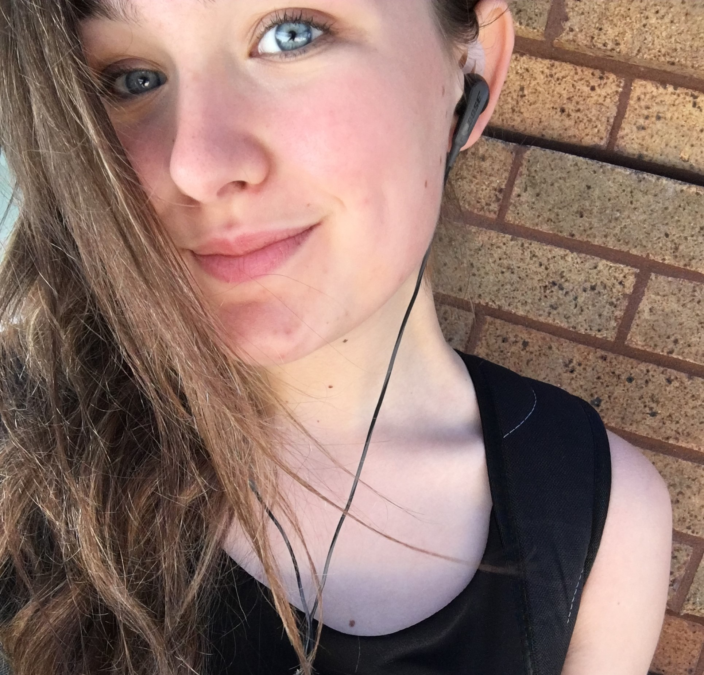

About Me
Hello! My name is Emma Baier, and I am a third year student studying Design and Cognitive Science at the University of California, Davis. Although I started my collegiate career as a Mechanical Engineering student, I find that my interdisciplinary course of study, which includes art, design, technology, psychology, computer science, linguistics, and philosophy, allows me to play to both my creative and logical strengths, and to explore how many of the subjects I love are interrelated. I'm really inspired by simple yet bold designs, and works that can tell beautiful stories. I am also constantly inspired by the music, books, tv, and movies whose stories, sounds, and scenery have shaped me as I've grown into the person I am today (a big ole design geek that loves cute things, romances, complex symbolism, and too many musical genres to count). I'm currently learning how more about different coding languages, new design softwares and technologies, and principles and theories in both design and cognitive science that can come together to help me produce work that I hope will not only be in some way beautiful, but also meaningful.
Though interning with companies such as OSIsoft, LLC., Schneider Electric, and Shanti Life India, I've learned so much about working with both software and hardware, working with both teammembers and clients, being adaptable, confident, and approachable in professional situations, and the value of doing work for really worthy causes. After graduating from UC Davis, I aspire to find a career in UI/UX design, web design, graphic design, video game design, or another interdisciplinary design field by applying all of the skills I've learned.
My hobbies include singing, doodling, reading for hours on end, writing short stories and poems, playing the guitar or ukulele, petting dogs, constantly listening to music, binge-watching TV shows, and spending time with my friends and family (I love them very much).
I'd love to hear from you! If you'd like to contact me about one of my works, have an idea for something you'd like to see from me, or simply want to say hi or ask me a question, please see the next section for all of my contact details. Thank you so much!